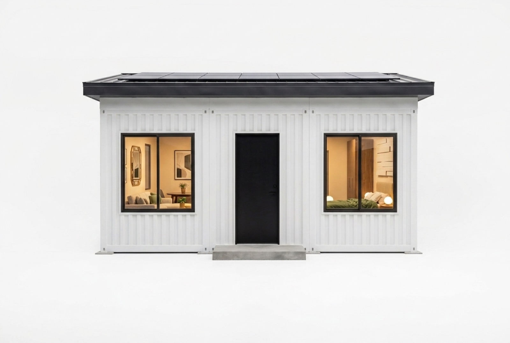
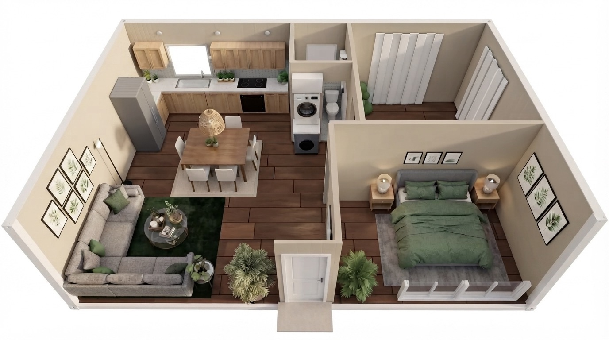
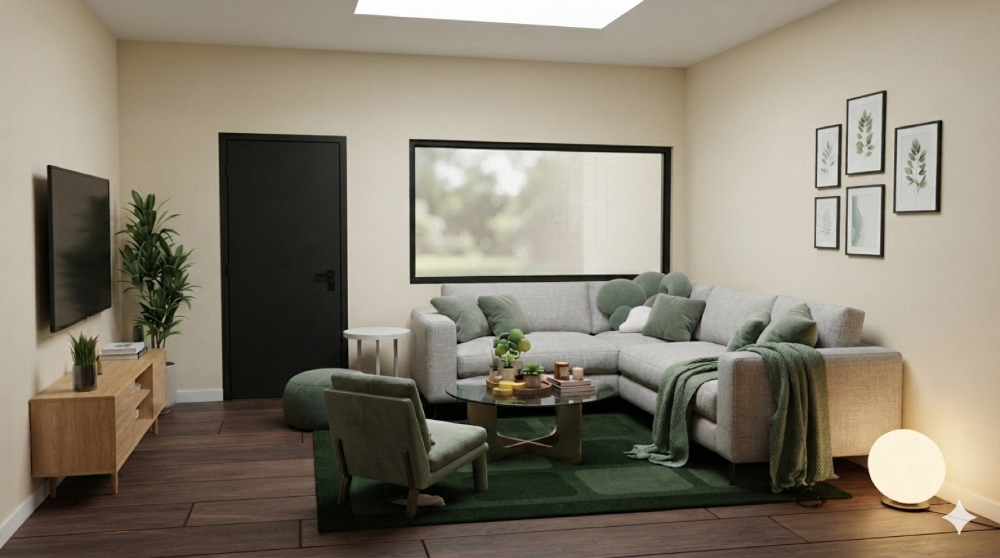
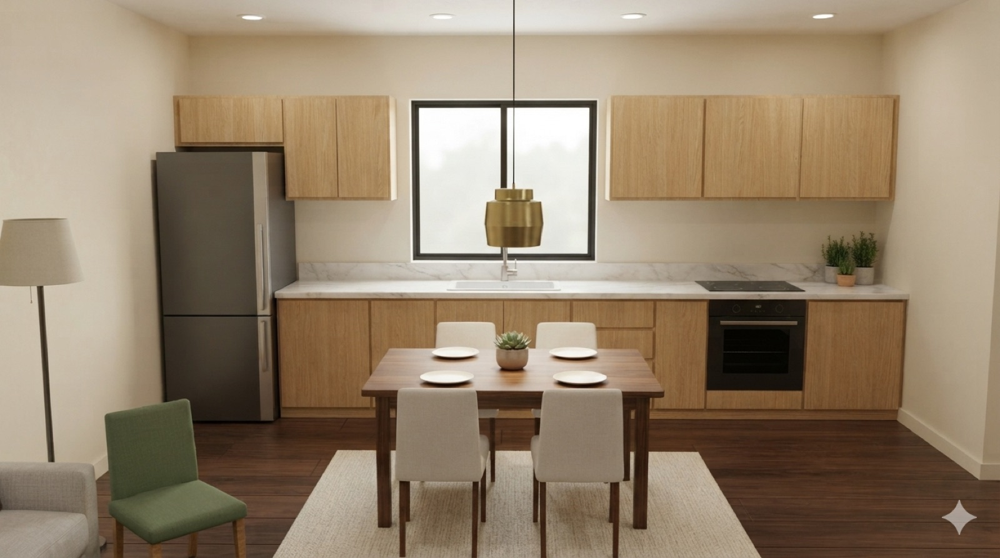
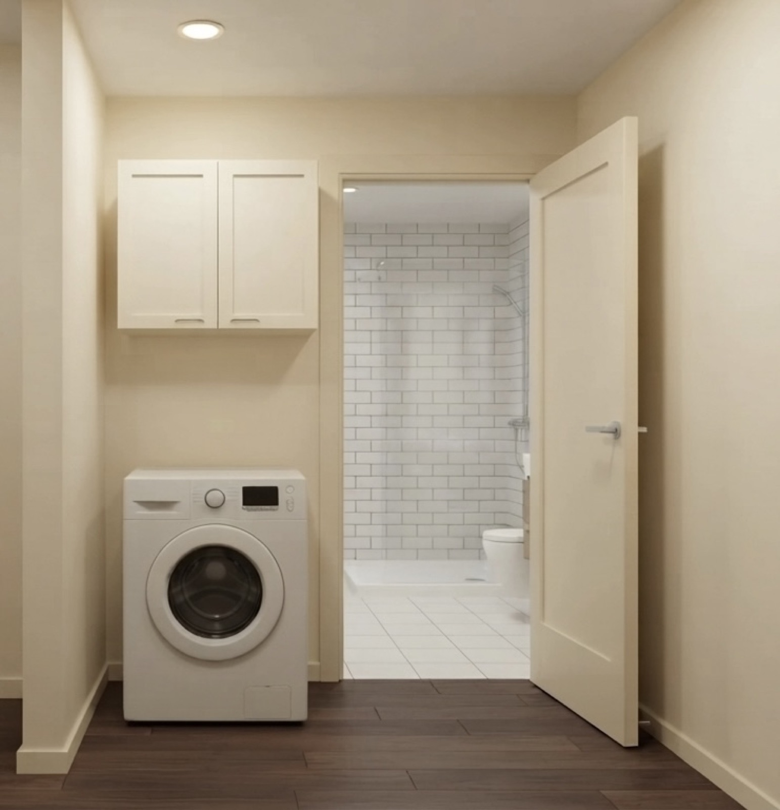
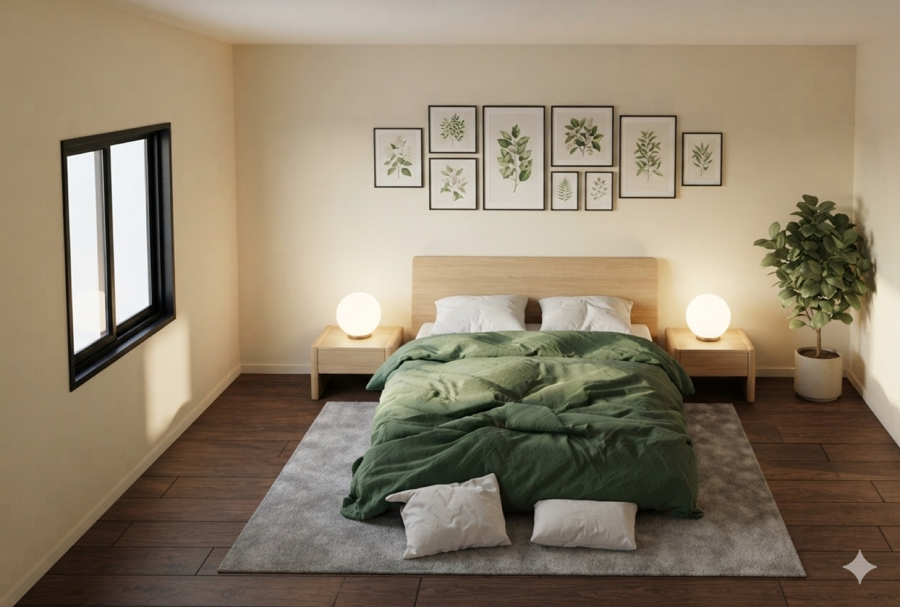
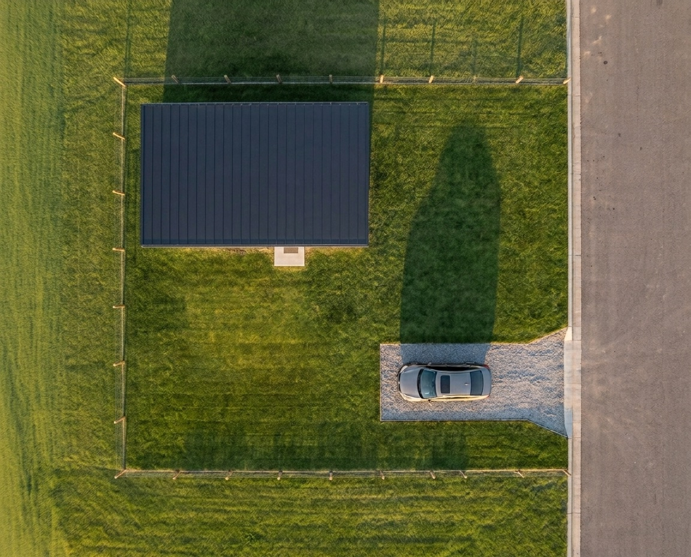
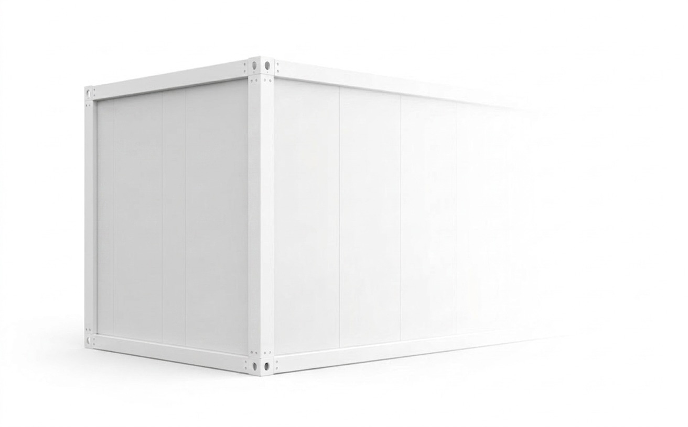

Por fuera
Esto es lo primero que vas a ver: acero blanco, techo solar y puerta negra. Tu casa con terreno propio, lista para estrenar.
Toca cada zona y te muestro dónde queda.


Esto es lo primero que vas a ver: acero blanco, techo solar y puerta negra. Tu casa con terreno propio, lista para estrenar.

Salón abierto, sofá en L y ventanales que dejan entrar el sol toda la tarde. Aquí se junta la familia.

Cocina en L con cubierta de mármol, madera y parrilla empotrada. Al lado, la mesa para comer juntos bajo una lámpara baja.

Baño con ducha y azulejo blanco, junto a un rincón de lavandería integrado. Práctico, limpio y bien resuelto en pocos metros.

Cama amplia, veladores y luz natural. La segunda recámara la usas como quieras: cuarto de visitas, oficina o vestidor.

14 m 13 m182 m² de terreno propio, incluidos en el precio. La casa ocupa 54 m²; el resto es tuyo.
La imagen es un concepto: la cerca, la cochera, el carro y el jardín son ilustrativos y no están incluidos. Lo que recibes: la casa modular instalada y el terreno. Ver aviso completo.
El punto exacto del desarrollo, junto a la Laguna de Chanmico: naturaleza a la puerta de tu casa.
Aurora se arma con tres contenedores de acero unidos en sitio. Cada uno mide lo mismo; juntos hacen los 54 m².

5.95 m 2.80 m 3.00 mPrecio estimado: US$ 25,000 con terreno incluido. Déjanos tus datos y te enviamos la ubicación, las medidas exactas y la disponibilidad. Te contestamos el mismo día.
Aviso: todas las imágenes de este sitio y la casa en 3D son representaciones conceptuales generadas con inteligencia artificial y modelado 3D del prototipo. La oferta incluye únicamente la casa modular (los tres contenedores), su instalación y el terreno. Todo lo demás que aparece en las imágenes es concepto ilustrativo y no está incluido: el interior (cocina, muebles, baño y acabados) y también los exteriores mostrados (cerca perimetral, cochera, vehículos, jardín y vegetación). Cada persona equipa y construye eso a su gusto. Materiales, colores y dimensiones finales pueden variar respecto a lo mostrado. Al contactarnos recibirás los detalles reales: dimensiones exactas, proceso de entrega y especificaciones completas.